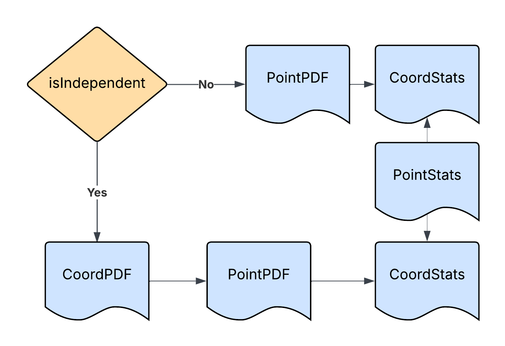

Data Representation§
Recall from Plan that RomCom is an alphabetically ordered hierarchy. The hierarchy begins with the base package, which provides the software foundations of RomoCom. This page describes the second package in the hierarchy, which provides RomCom data representation facilities. In order to work with RomCom, you will need to understand how to present your data to this package, and how your data will be presented back to you in the output.
The data package§
The package consists of three modules.
data.functions§
Consists entirely of test functions, which are wrapped versions of SALib test functions. These introduce two key aspects of RomCom
Multiple Outputs§
Each test function ishigami, sobolG, oakley2004 outputs a vector of 3 outputs.
For a given vector function, each output component is computed with a different set of parameters.
There is a test function all which is the 9 dimensional concatenation of ishigami, sobolG, oakley2004.
Categorical Inputs§
The test function all is also available as categorized.
This is a scalar function which accepts two categorical inputs, f in ('ish', 'sob', 'oak')
and p in (0, 1, 2), which which determine which of the 9 components of all is computed.
{kind=link}

data.models§
data.samples§
Functions DesignMatrix